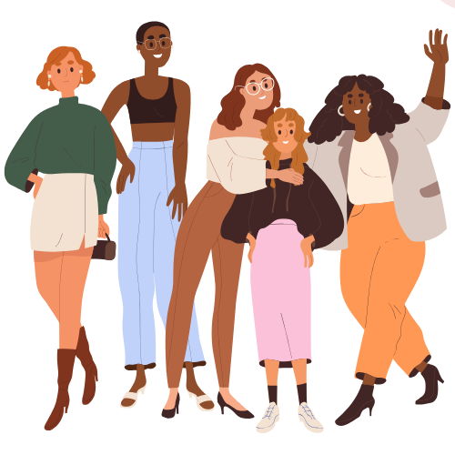

Conceptos básicos
Conceptos básicos
 Paso a paso
Paso a paso
 Esquemas
Esquemas
 Reuniones
Reuniones
explore Guía para Subgrupos
Cada reunión sigue un esquema simple para
compartir, reflexionar y orar juntas:
- Luz: comparte un momento de alegría, gratitud o bendición de la semana.
- Sombra:habla de un desafío o lucha que hayas enfrentado.
-
Momento del Espíritu Santo: escribe un instante
en que hayas sentido Su presencia, aunque sea sutil o inesperado.
 - Intención: expresa un área donde necesites la ayuda de Dios y el apoyo de tus hermanas.
-
Oración final: Cformen un círculo y oren por la
persona a su derecha o izquierda; finalicen con un Ave María o una
oración conjunta como el Rosario o la Coronilla de la Divina
Misericordia.